Куршская коса
 Маршруты БалтикиБалтика — это маршрут.
Маршруты БалтикиБалтика — это маршрут.
Свет на сайте
Сегодня · Калининград
В режиме «Авто» свет меняется вместе с солнцем.
Начало астрономической ночи для этих суток не рассчитано.
Спланировать вечерБраузер не сохранил выбор. На этой странице режим работает.
Балтийский
характер
рядом

Туристические маршруты отобранные специально для вас
Тишина
тоже
движет
Настоящая
Балтика
ближе
Места, которые
вдохновляют
Ваша поездка начинается здесь
Выберите прогулку — её остановки появятся в вашем маршруте.
Или начните с места, к которому хочется вернуться.
Ваши записи появятся здесь после загрузки поездки.
Готовые прогулки
Путь уже собран. Выберите прогулку,
а потом подстройте её под свой день.
Куршская коса

Куршская коса

Калининград

Открытие дня
Калининград
Не каждый маяк стоит на берегу. «Ирбенский» — судно: оставьте ему одну остановку в прогулке вдоль Преголи.
Прогулка сохранена. Добавьте её остановки или выберите места сами.
Меняйте порядок за ручку или стрелками. Новая прогулка дополнит выбранные точки.
Сохранённых прогулок пока нет.
Море ближе, чем кажется
От вокзала до Зеленоградска — и обратно. Оставьте время на прогулку и дорогу к поезду.
Летом рейсов больше. У «Морского экспресса» своя станция — Зеленоградск-2. Выбирайте её отдельно от центрального вокзала. От Зеленоградска-2 к пляжу и обратно →
Балтика в ближайшие часы
Загружаем прогноз для прогулки…
Час прогноза: . Время Калининграда.
Данные Норвежского метеорологического института ↗, лицензия с указанием авторства ↗. Выбраны точки региона и ближайшие часы. Закат рассчитан для открытого горизонта.
Откройте поездку из файла, вернитесь к прежнему выбору или перенесите маршрут на другой телефон.
Выбор хранится в этом браузере. Файл поездки поможет перенести его на другое устройство.
Браузер не разрешает сохранение. Выбор останется только в этой вкладке.

Морской город с характером

Дюны. Лес. Бесконечный горизонт
По всей области
Больше,
чем точки на карте

У каждого дня свой берег
Выберите время и место.
Мы покажем остановки и путь.
Пять пеших прогулок · Выберите свой день
Пешком · Калининград · 1,6 км
У вилл Лео и Шмидт прогулка начинается с архитектуры, у кирхи памяти королевы Луизы переходит к аллеям Центрального парка. Два часа на этот путь; для «Альтес Хаус» добавьте отдельное время.
Пешком · Калининград · 2,3 км
Преголя ведёт от собора через Медовый мост и Рыбную деревню к музейной набережной. Здесь стоят «Витязь» и «Планета Океан». Три часа на прогулку; посещение музеев займёт дополнительное время.
Пешком · Калининград · 4,5 км
От Королевских и Закхаймских ворот путь выходит к Рыбной деревне, острову Канта и музейной набережной. Около 4,5 км: городская архитектура постепенно уступает место реке.
Пешком · Куршская коса · 1,1 км
Дорожки Танцующего леса ведут между соснами и возвращают к началу прогулки. Около часа с остановками; до входа на тропу нужно добраться транспортом. Высота Эфа — отдельная поездка.
Пешком · Куршская коса · 1,9 км
От входа на тропу путь поднимается к смотровой Эфа, затем возвращается по тому же разрешённому маршруту. Почти 2 км со ступенями и остановкой у дюн; дорогу до тропы рассчитайте отдельно.
Пешком · Зеленоградск · 1,2 км
Небольшой день у моря: от западной станции к широкому пляжу и обратно к поезду. В линии учтены оба пеших подхода, в остановках — полчаса у воды.
Поездка складывается из деталей
Квартира в городе, небольшой отель или дом среди сосен — начните с того, каким хотите видеть своё утро.
Для прогулок пешком: сравните расстояние до променада, этаж, парковку и условия заселения.
Для короткой поездки: проверьте завтрак, время заезда и правила отмены.
Для уединения: уточните отопление, подъезд, санузел и расстояние до доступного выхода к морю.
Автомобиль для побережья, прогулка пешком по городу или поездка с гидом. Выберите то, что подходит вашему дню.
Сравните подачу в Храброво, депозит, страховку и условия возврата. На Косу отдельно проверьте правила и стоимость въезда.
Уточните размер группы, транспорт, входные билеты и время на каждой остановке.
Для города подойдут пешие прогулки. Перед выездом в другие места проверьте актуальное расписание и обратный рейс.
Город на вкус
Кофе на тихой улице, обед у моря. Соберите свою прогулку между ресторанами и кафе Зеленоградска.
 Зеленоградск · 30 мая
Зеленоградск · 30 маяБалтийская кухня
Курортный проспект, 29
На Курортном проспекте Балтика становится обедом. На вывеске — «Телеграф», в снятом нами меню — килька и уха. Хорошая остановка между старым городом и морем.

Телеграф
Точка из каталога. Вход уточните на месте.
Карта: © участники OpenStreetMap · 1 октября 2026
 Зеленоградск · 30 мая
Зеленоградск · 30 маяСовременная балтийская кухня
Курортный проспект, 16
За вывеской Курхауса — другая сторона побережья: травы, лепёшки и балтийская кухня. Сюда можно свернуть с Курортного проспекта, оставив море на вторую половину прогулки.

БАЛТ
Точка из каталога. Вход уточните на месте.
Карта: © участники OpenStreetMap · 1 октября 2026
 Зеленоградск · 30 мая
Зеленоградск · 30 маяДомашняя кухня и завтраки
Курортный проспект, 3
У восточного конца Курортного проспекта день можно начать без спешки. На уличном меню — яичницы, пироги и блины. Дальше город постепенно уступает место парку и морю.

Сковородка
Точка из каталога. Вход уточните на месте.
Карта: © участники OpenStreetMap · 1 октября 2026
Балтика рядом
От города к дюнам, от леса к морю.
Посмотрите, как расположены места вашей поездки.

Ваш день — ваш выбор